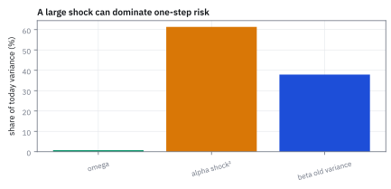
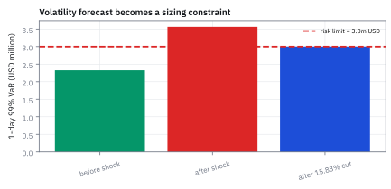

16.4 Autoregressive Conditional Heteroskedasticity (ARCH) and Generalized ARCH (GARCH) Volatility Forecasting
GARCH ให้ variance ของพรุ่งนี้เป็นส่วนผสมของระดับปกติ ข่าวกำลังสองของวันนี้ และความจำของ variance เอง จึงตอบได้ว่าหลังวันร่วงต้องลดพอร์ตเท่าไรและนานแค่ไหน
พอร์ตหุ้น \$100 ล้านใช้ GARCH(1,1) ที่ $\omega=1.8\times10^{-6}$, $\alpha=0.09$, $\beta=0.89$ เมื่อวานตลาดร่วง 4% ทั้งที่แบบจำลองคาดความผันผวนของเมื่อวานไว้แค่ 1% คนหนึ่งบอกว่า “ใช้ 1% ต่อไป วันเดียวไม่เปลี่ยนโลก” อีกคนบอกว่า “ใช้ 4% เพราะนั่นคือสิ่งที่เพิ่งเกิด” ความผันผวนของวันนี้ควรเป็นเท่าไร และต้องขายเท่าไรให้ 1-day 99% VaR ไม่เกิน \$3 ล้าน?
ลองตอบก่อนเปิดเฉลย
ไม่ใช่ทั้งสองค่า ความผันผวนวันนี้คือ 1.532% ต่อวัน อยู่ระหว่างกลางแต่ใกล้ของเดิมกว่า VaR ขึ้นจาก \$2.33 ล้านเป็น \$3.56 ล้าน จึงต้องลดพอร์ตเหลือ \$84.16 ล้าน คือขาย \$15.84 ล้าน และถ้าวันต่อ ๆ ไปเป็นไปตามที่คาด ส่วนเกินของ variance หดครึ่งทุก 34.3 วันทำการ พอร์ตจะกลับมาเต็มขนาดได้ในวันที่ 32
สิ่งที่เราจะสร้าง
16.1 พบว่าผลตอบแทนแทบไม่จำทิศทาง แต่ขนาดของการขยับจำกันแรง: ACF ของ $|r_t|$ ที่ lag 1 คือ 0.284 และ 10.4 เห็นความผันผวนมาเป็นช่วงในข้อมูลจริง 16.2 และ 16.3 สร้างความจำให้ค่าเฉลี่ย หัวข้อนี้ใช้ความคิดเดียวกันกับ variance: ให้ variance ของพรุ่งนี้เป็นสมการของข่าวกำลังสองวันนี้
เราเริ่มจาก ARCH ที่ง่ายที่สุดแล้วดูว่ามันลืมเร็วเกินไป เติมความจำเป็น GARCH กางสมการให้เห็นว่ามันถ่วงข่าวทุกวันในอดีต หาระดับปกติ ความผันผวนของวันนี้ เส้นทางกลับสู่ปกติ และแปลงเป็นขนาดพอร์ต จากนั้นแสดงว่า GARCH คือ ARMA ของข่าวกำลังสอง หางอ้วนที่มันสร้างเอง และสิ่งที่มันพลาด ค่า parameter เป็นค่าสมมติในระดับที่พบบ่อยสำหรับดัชนีหุ้นรายวัน
ศัพท์ที่ใช้ในหัวข้อนี้
- Conditional variance
- variance ของผลตอบแทนพรุ่งนี้เมื่อรู้ข้อมูลถึงวันนี้แล้ว ต่างจาก variance เฉลี่ยทุกวัน ใช้กำหนดว่าวันนี้ควรถือความเสี่ยงได้เท่าไร
- ARCH
- autoregressive conditional heteroskedasticity: แบบจำลองที่ variance ของวันนี้ขึ้นกับข่าวกำลังสองของวันก่อน ๆ จำนวนจำกัด ใช้จับว่าวันแรงมักตามด้วยวันแรง
- GARCH
- generalized ARCH: ARCH ที่เพิ่ม variance ของเมื่อวานเข้าไปในสมการ ความจำจึงยาวโดยใช้ parameter แค่สามตัว เป็นแบบจำลองความผันผวนรายวันที่ใช้กันแพร่หลายที่สุด
- Persistence
- ค่า $\alpha+\beta$ คือสัดส่วนของ variance ส่วนเกินที่ยกยอดไปวันถัดไป ใช้หา half-life ของช่วงปั่นป่วน
- Value at Risk (VaR)
- ขาดทุนหนึ่งวันที่แบบจำลองคาดว่าจะเกินได้แค่ 1% ของวัน ใช้เป็นเพดานความเสี่ยงของโต๊ะ ไม่ใช่เพดานขาดทุน 17.1 นิยามให้ครบ
- Leverage effect
- การที่วันลบดันความผันผวนของหุ้นมากกว่าวันบวกขนาดเท่ากัน GARCH แบบปกติมองไม่เห็นเพราะใช้ข่าวกำลังสอง รุ่นอย่าง GJR-GARCH แยกสองฝั่งออกจากกัน
- Kurtosis
- ค่าเฉลี่ยของกำลังสี่หารด้วยกำลังสองของ variance ใช้วัดว่าหางหนาแค่ไหน Normal มีค่า 3 ค่าที่มากกว่า 3 แปลว่าวันสุดโต่งเกิดบ่อยกว่า Normal
สัญลักษณ์และหน่วย
| สัญลักษณ์ | ความหมาย | หน่วย |
|---|---|---|
| $r_t,\ \epsilon_t$ | ผลตอบแทนของวัน $t$ และข่าวหลังหักค่าเฉลี่ย (โจทย์ถือค่าเฉลี่ยเป็นศูนย์) | ทศนิยมต่อวัน |
| $z_t$ | ก้อนสุ่ม Normal มาตรฐานของวัน $t$ | ไม่มีหน่วย |
| $\sigma_t^2,\ \sigma_t$ | variance และความผันผวนของวัน $t$ เมื่อรู้ข้อมูลถึงวันก่อน | ทศนิยม² และทศนิยมต่อวัน |
| $\omega,\ \alpha,\ \beta$ | พื้นของ variance, น้ำหนักของข่าวกำลังสอง, น้ำหนักของ variance เมื่อวาน | ทศนิยม², ไม่มีหน่วย, ไม่มีหน่วย |
| $V$ | variance ระยะยาวที่แบบจำลองกลับไปหา | ทศนิยม² |
| $f_h$ | variance ที่พยากรณ์ไว้สำหรับ $h$ วันหลังวันนี้ | ทศนิยม² |
| $A,\ L,\ z_{0.99}$ | มูลค่าพอร์ต, เพดาน VaR และ quantile 99% ของ Normal | USD, USD, ไม่มีหน่วย |
ขั้นที่ 1 — จาก “วันแรงตามด้วยวันแรง” สู่สมการของ variance: ARCH(1)
ถ้าขนาดของเมื่อวานบอกขนาดของวันนี้ได้ ทางตรงที่สุดคือเขียน variance ของวันนี้เป็นฟังก์ชันของข่าวกำลังสองของเมื่อวาน บรรทัดแรกคือนิยามของผลตอบแทน: ข่าวคือความผันผวนของวันนั้นคูณก้อนสุ่มมาตรฐานที่อิสระกันทุกวัน บรรทัดที่สองคือนิยามของ ARCH(1) ลองใส่ $\omega=8.19\times10^{-5}$ ซึ่งเลือกให้ระดับปกติเท่ากับแบบจำลองหลักของหน้านี้ (ขั้นที่ 4) และ $\alpha=0.09$ เท่ากัน
ARCH(1) ตอบสนองต่อวันร่วงทันที ความผันผวนขึ้นจาก 1% เป็น 1.503% แต่บรรทัดสุดท้ายคือปัญหา: ถ้าวันนี้เงียบ พรุ่งนี้ variance กลับไปที่ $\omega$ ทันที ความผันผวน 0.905% ต่ำกว่าระดับปกติด้วยซ้ำ วันร่วง 4% ถูกลืมหมดภายในวันเดียว ซึ่งขัดกับ ACF ของ $|r_t|$ ที่ยังเป็น 0.118 ที่ lag 20 ใน 16.1
ARCH แก้ด้วยการใส่ข่าวกำลังสองย้อนหลังหลายวัน แต่ต้องประมาณน้ำหนักทีละวัน ทางที่ประหยัดกว่าคือเก็บความจำไว้ในตัวแปรเดียว: variance ของเมื่อวานเอง
ขั้นที่ 2 — GARCH(1,1) และเงื่อนไขที่ทำให้มันใช้ได้
เติม $\beta\sigma_{t-1}^2$ เข้าไป variance ของเมื่อวานเก็บสรุปของข่าวทุกวันก่อนหน้าอยู่แล้ว สมการนี้เป็นนิยามของแบบจำลองที่เราเลือกใช้ ตามด้วยเงื่อนไขสองข้อ: variance ต้องเป็นบวกทุกวัน และต้องไม่โตไม่หยุด
สามก้อนมีหน้าที่ต่างกัน $\omega$ คือพื้นที่ variance ไม่มีวันต่ำกว่า $\alpha\epsilon_{t-1}^2$ ตอบสนองต่อข่าวที่เพิ่งเกิด และ $\beta\sigma_{t-1}^2$ สืบทอดคำพยากรณ์ของเมื่อวาน ถ้าสามก้อนไม่ติดลบและ $\omega$ เป็นบวก variance ก็ติดลบไม่ได้
$\alpha+\beta$ คือสัดส่วนของความแรงเมื่อวานที่ยกยอดมาถึงวันนี้ ที่ 0.98 แปลว่าลืมไปแค่ 2% ต่อวัน ถ้า $\alpha+\beta\ge1$ จะไม่มีระดับปกติให้กลับ เหตุผลเดียวกับที่ AR(1) ใน 16.2 ต้องมี $|\phi|\lt1$
Figure 16.4a — ผลตอบแทนจำลองจาก GARCH(1,1): วันแรงเกาะกลุ่มกัน

ขั้นที่ 3 — กางสมการ: GARCH คือค่าเฉลี่ยถ่วงของข่าวทุกวันในอดีต
สมการของขั้นที่ 2 กดเครื่องคิดเลขได้ แต่ยังไม่บอกว่ามันให้น้ำหนักอดีตอย่างไร แทนสมการของเมื่อวานลงไปแทน $\sigma_{t-1}^2$ แบบเดียวกับที่ทำกับ AR(1) ในขั้นที่ 8 ของ 16.2
แทนรอบเดียวก็เห็นรูป: variance เมื่อวานหายไป แทนที่ด้วยข่าวกำลังสองของเมื่อวานซืนคูณ $\beta$ ทำซ้ำไปเรื่อย ๆ ทุกวันในอดีตโผล่มาครบ และก้อน $\omega$ สะสมเป็น $\omega/(1-\beta)$ แบบเดียวกับ $c/(1-\phi)$ ใน 16.2
ข่าวเมื่อวานได้น้ำหนัก 0.09 ข่าวเมื่อสี่วันก่อนเหลือ 0.0634 น้ำหนักหดครึ่งทุก 5.95 วัน และไม่มีวันไหนหลุดออกทันที
ระวังสองตัวเลข: $\beta=0.89$ คืออัตราที่ข่าวเก่าจางในค่าของวันนี้ ส่วน $\alpha+\beta=0.98$ คืออัตราที่คำพยากรณ์กลับสู่ปกติในขั้นที่ 6 ซึ่งช้ากว่า เพราะวันข้างหน้าก็คาดว่าจะมีข่าวใหม่ขนาดเท่ากับ variance ที่สูงอยู่
Figure 16.4b — น้ำหนักของข่าวเก่า: GARCH เทียบกับหน้าต่าง 20 วัน

ขั้นที่ 4 — ระดับปกติที่ variance กลับไปหา
ถ้าปล่อยไว้นาน variance เฉลี่ยจะนิ่งที่ค่าหนึ่ง ใช้กลวิธีของ 16.2: หาค่าเฉลี่ยทั้งสองข้าง แล้วตั้งให้ค่าเฉลี่ยของสองวันเท่ากัน ก้อนที่ต้องคิดก่อนคือค่าเฉลี่ยของข่าวกำลังสอง
บรรทัดแรกแยกค่าเฉลี่ยของผลคูณได้ เพราะ $\sigma_t$ ถูกกำหนดจากข้อมูลถึงเมื่อวานแล้ว ส่วน $z_t$ เป็นของใหม่ที่อิสระจากมัน และ $\mathbb E[z_t^2]=1$ ตัวส่วน 0.02 ขยาย $\omega$ ขึ้น 50 เท่า $\omega$ จึงไม่ใช่ระดับปกติ เหมือนที่ $c$ ไม่ใช่ค่าเฉลี่ยใน 16.2
แปลงเป็นรายปีด้วย $\sqrt{252}$ เพราะ variance บวกกันตามจำนวนวัน (252 วันทำการจาก 1.1) ส่วน SD โตตามราก คนที่คูณ 0.9487% ด้วย 252 ตรง ๆ จะได้ 239% ต่อปี ซึ่งผิดไป 15.9 เท่า
ขั้นที่ 5 — ความผันผวนของวันนี้หลังวันร่วง 4%
โจทย์ให้อะไรมาบ้าง: ข่าวเมื่อวาน $\epsilon_{t-1}=-0.04$ จึงได้ $\epsilon_{t-1}^2=0.0016$ ความผันผวนที่คาดไว้สำหรับเมื่อวาน 1% จึงได้ $\sigma_{t-1}^2=0.0001$ ทุกตัวเป็นทศนิยม ไม่ใช่ % ใส่เข้าสมการของขั้นที่ 2 ทีละก้อน
คำตอบ: 1.532% ต่อวัน ก้อนของข่าวได้ $0.000144/0.0002348=61.3\%$ ของ variance ก้อนความจำ 37.9% และพื้น $\omega$ แค่ 0.8% ข่าวเมื่อวานครองคำพยากรณ์ แต่ความผันผวนขึ้นแค่ 53% ทั้งที่ข่าวใหญ่กว่าที่คาดสี่เท่า เพราะแบบจำลองให้น้ำหนักข่าววันเดียวแค่ 9% ตอบสนองแต่ไม่ตื่นตระหนก
เทียบกับหน้าต่าง 20 วันที่ให้น้ำหนักเท่ากัน: สมมติ 19 วันก่อนหน้าแกว่งวันละ 1% พอดี ค่าเฉลี่ยคือ $(19\times0.0001+0.0016)/20=0.000175$ ได้ 1.323% และถ้าวันต่อ ๆ ไปแกว่ง 1% ตัวเลขนี้จะค้างที่ 1.323% อีก 19 วัน แล้วตกเป็น 1.000% ทันทีในวันที่ 21 เมื่อวันร่วงหลุดหน้าต่าง การกระโดดลงนั้นไม่มีเหตุผลทางเศรษฐกิจ ความเสี่ยงไม่ได้หายเพราะปฏิทินเดินผ่าน
ตรวจเองใน 10 วินาที: $0.0000018+0.000144+0.000089=0.0002348$ และ $1.5323^2\approx2.348$
Figure 16.4c — สัดส่วนของสามก้อนใน variance ของวันนี้

ขั้นที่ 6 — พยากรณ์หลายวัน และ half-life ของช่วงปั่นป่วน
พรุ่งนี้ต้องใช้ข่าวของวันนี้ ซึ่งยังไม่เกิด เราไม่รู้ว่าจะขึ้นหรือลง แต่รู้ว่าค่าเฉลี่ยของข่าวกำลังสองคือ variance ที่พยากรณ์ไว้ แทนเข้าไปแล้ว $\alpha$ กับ $\beta$ ยุบรวมเป็นตัวเดียว ตัวเลขข้างล่างเขียนในหน่วย $10^{-6}$ ให้อ่านง่าย 0.0002348 จึงเป็น 234.8
บรรทัดที่สองใช้ $\mathbb E_{t-1}[\epsilon_{t+h}^2]=f_h$ ด้วยเหตุผลเดียวกับขั้นที่ 4 ลบสมการระดับปกติ $V=\omega+0.98V$ ออก ก็ได้ส่วนเกินที่หด 2% ต่อวัน ซึ่งคือรูประยะห่างของ AR(1) ใน 16.2 ทุกประการ ส่วนเกินวันนี้ $144.8\times10^{-6}$ จึงหดครึ่งใน 34.3 วันทำการ
| $h$ (วัน) | $0.98^h$ | $f_h$ ($10^{-6}$) | $\sqrt{f_h}$ ต่อวัน |
|---|---|---|---|
| 1 | 0.9800 | 231.90 | 1.523% |
| 2 | 0.9604 | 229.07 | 1.513% |
| 5 | 0.9039 | 220.89 | 1.486% |
| 20 | 0.6676 | 186.67 | 1.366% |
| 60 | 0.2976 | 133.09 | 1.154% |
| ไกลมาก | 0 | 90.00 | 0.949% |
ทุกแถวคือ $f_h=90+0.98^h(144.8)$ ผ่านไป 60 วัน ความผันผวนยังอยู่ที่ 1.154% สูงกว่าระดับปกติ 22% ส่วนเกินของ $\sigma$ เองหดครึ่งช้ากว่าของ variance: $\sigma$ จะลงถึงครึ่งทางระหว่าง 1.532% กับ 0.949% คือ 1.2405% ในวันที่ 40.5 ไม่ใช่ 34.3 เพราะการถอดรากทำให้การลดของ variance ดูอ่อนลง
ความเสี่ยงหลายวันต้องบวก variance ของแต่ละวันที่พยากรณ์ไว้ ไม่ใช่คูณรากของเวลากับค่าวันนี้ variance 10 วันคือ $\sum_{h=0}^{9}f_h=10V+(f_0-V)(1-0.98^{10})/0.02=0.0022244$ ได้ SD 10 วัน 4.716% ขณะที่ $\sqrt{10}\times1.5323\%=4.846\%$ สูงไปเพราะลืมว่าความผันผวนกำลังลดลง และ $\sqrt{10}\times0.9487\%=3.000\%$ ต่ำไปมาก
Figure 16.4d — ความผันผวนที่พยากรณ์ไปถึง 60 วัน

ขั้นที่ 7 — แปลงความผันผวนเป็น VaR และขนาดพอร์ต
โจทย์ให้อะไรมาบ้าง: พอร์ต $A=\$100$ ล้าน เพดาน $L=\$3$ ล้าน สมมติผลตอบแทนวันนี้เป็น Normal ที่ SD $\sigma_t$ ตามแบบจำลอง quantile 1% ของ Normal คือ $z_{0.99}=2.326348$ (1.9) VaR คือขาดทุนที่ quantile 1% ของ P&L
คำตอบ: VaR ขึ้นจาก \$2.33 ล้านเป็น \$3.56 ล้าน เกินเพดาน 19% จึงต้องลดพอร์ตเหลือ \$84.16 ล้าน คือขาย \$15.84 ล้านเช้านี้ พอร์ตเต็ม \$100 ล้านรับความผันผวนได้สูงสุด 1.2896% ต่อวัน หรือ variance $1.2896\%^2=166.30\times10^{-6}$ ในหน่วยเดียวกับขั้นที่ 6 ซึ่งเส้นทางของขั้นที่ 6 ลงมาถึงในวันที่ 32 นับจากวันนี้ ตัวเลขทั้งชุดมาจากโซ่ที่ตรวจย้อนได้: ข่าว −4% ให้ variance 0.0002348 ให้ $\sigma$ 1.532% ให้ VaR \$3.56 ล้าน
ตรวจเองใน 10 วินาที: VaR เป็นเส้นตรงใน $\sigma$ อัตราส่วน $3.5647/2.3263=1.532$ เท่ากับอัตราส่วนของความผันผวนพอดี และ $100/1.532\times(3/2.326)\approx84.2$ ล้าน
Figure 16.4e — VaR เกินเพดาน และการลดพอร์ต

ขั้นที่ 8 — GARCH คือ ARMA(1,1) ของข่าวกำลังสอง
ขั้นที่ 6 ดูเหมือน AR(1) ของ 16.2 มาก ขั้นนี้แสดงว่าไม่ใช่เรื่องบังเอิญ ตั้ง $v_t$ เป็นส่วนที่ข่าวกำลังสองจริงต่างจาก variance ที่คาดไว้ ค่าเฉลี่ยของมันเมื่อรู้อดีตเป็นศูนย์ เพราะ $\mathbb E[z_t^2]=1$ แล้วแทน $\sigma^2=\epsilon^2-v$ ลงในสมการ GARCH
บรรทัดที่สามคือ ARMA(1,1) ของ 16.3 โดยมีข่าวกำลังสองเป็นอนุกรม $\phi=\alpha+\beta$ และ $\theta=-\beta$ ค่าเฉลี่ยระยะยาวของมันคือ $\omega/(1-0.98)=V$ แบบ $c/(1-\phi)$ และ ACF ใช้สูตรของ 16.3 ได้ตรง ๆ เพราะ $v_t$ ไม่มี correlation ข้ามวัน แม้ขนาดของมันจะขึ้นกับ $\sigma_t$ ก็ตาม
ผลคือรูปร่างที่ 16.1 เห็นใน $|r_t|$: lag 1 ถูกดึงลงเหลือ 0.24 ด้วยก้อน MA ที่ติดลบ แล้วจางช้ามากด้วยอัตรา 0.98 ยังเหลือ 0.16 ที่ lag 20 AR(1) ธรรมดาทำแบบนี้ไม่ได้ สูตรนี้ต้องการให้กำลังสี่ของข่าวมีค่าเฉลี่ยจำกัด ซึ่งขั้นที่ 9 ตรวจ
ขั้นที่ 9 — หางอ้วนที่ GARCH สร้างขึ้นเอง
$z_t$ เป็น Normal ทุกวัน แต่ผลตอบแทนที่มองรวมทั้งปีไม่ใช่ เพราะมันคือส่วนผสมของ Normal หลายตัวที่กว้างไม่เท่ากัน ลองตัวอย่างเล็กก่อน: ครึ่งหนึ่งของวันมี $\sigma=1$ อีกครึ่งมี $\sigma=2$ ใช้ $\mathbb E[z^4]=3$ จาก 8.5 แล้วค่อยทำกับ GARCH จริง
GARCH ทำแบบเดียวกันแต่ $\sigma_t$ เปลี่ยนต่อเนื่อง เขียน $\sigma_t^2=\omega+(\alpha z_{t-1}^2+\beta)\sigma_{t-1}^2$ ยกกำลังสองแล้วหาค่าเฉลี่ย ใช้ stationarity บังคับให้ $\mathbb E[\sigma^4]$ ของสองวันเท่ากัน แล้วแทน $\omega=V(1-p)$ โดย $p=\alpha+\beta$
บรรทัดแรกคือจุดที่ต้องระวัง: สูตรทั้งหมดใช้ได้เมื่อ $c_4\lt1$ มิฉะนั้น $\mathbb E[\sigma^4]$ ไม่มีค่าจำกัด และ kurtosis ไม่มีความหมาย ที่ 0.9766 ผ่าน GARCH จึงให้ kurtosis 5.08 จาก $z_t$ ที่เป็น Normal แท้ นี่คือเรื่องเดียวกับ law of total variance ใน 2.2: ส่วนผสมของความกว้างที่ต่างกันทำให้หางหนา
ตรวจกับของจริง: ถ้า $\sigma$ คงที่ 1% วัน −4% คือเหตุการณ์ −4 SD ซึ่ง Normal ให้โอกาส $3.17\times10^{-5}$ หรือครั้งเดียวใน 125 ปี แต่ที่ $\sigma_t=1.532\%$ วันแบบเดียวกันคือแค่ −2.61 SD อย่างไรก็ตาม 10.4 พบวันที่ −18.2 SD ในปี 1987 ซึ่ง GARCH กับ Normal ก็อธิบายไม่ได้ งานจริงจึงมักใช้ $z_t$ แบบ Student-t
ขั้นที่ 10 — ข่าวร้ายกับข่าวดีไม่เท่ากัน: GJR-GARCH
สมการของขั้นที่ 2 ใช้ $\epsilon^2$ วันร่วง 4% กับวันขึ้น 4% จึงดัน variance เท่ากัน แต่ในหุ้น วันลบมักดันความผันผวนแรงกว่า GJR-GARCH แยกน้ำหนักของข่าวสองฝั่ง ตัวเลขข้างล่างเป็นค่าสมมติที่เลือกให้ความจำเฉลี่ยยังเป็น $0.03/2+0.15/2+0.89=0.98$ เท่าเดิม
GARCH ปกติให้ 1.532% ทั้งสองกรณี GJR ให้ 1.819% หลังวันร่วง และแค่ 1.178% หลังวันขึ้น ถ้าตลาดจริงเป็นแบบ GJR แต่โต๊ะใช้ GARCH ปกติ ความผันผวนหลังวันร่วงจะต่ำไปราว 0.29 จุด ซึ่งเป็นวันที่ต้องการตัวเลขที่ถูกที่สุด
คำถามที่ควรถามออกมาดัง ๆ
$\alpha$ กับ $\beta$ มาจากไหน? ประมาณจากข้อมูลด้วย maximum likelihood: สร้างเส้นทาง $\sigma_t^2$ จากสมการสำหรับค่าที่ลอง แล้วเลือกค่าที่ทำให้ $\sum_t\big[-\tfrac12\ln\sigma_t^2-\epsilon_t^2/(2\sigma_t^2)\big]$ มากที่สุด ด้วย optimizer เชิงตัวเลข ระวังว่า $\alpha=0.20,\ \beta=0.78$ มีความจำ 0.98 เท่ากัน จึงให้ระดับปกติและ half-life เดิม แต่หลังวันร่วงให้ความผันผวน 2.00% แทน 1.53% คำพยากรณ์ระยะยาวเท่ากัน วันแรกต่างกันมาก
ทำไมเขียนสมการเป็น variance ไม่ใช่ $\sigma$? variance ของข่าวอิสระบวกกันได้ตามจำนวนวัน ซึ่งเป็นสิ่งที่ขั้นที่ 4 และ 6 ใช้ และกำลังสองทำให้ทุกก้อนไม่ติดลบโดยอัตโนมัติ
ต่างจาก EWMA ที่ใช้กันใน RiskMetrics อย่างไร? EWMA ที่ $\lambda=0.94$ คือ GARCH ที่ $\omega=0,\ \alpha=0.06,\ \beta=0.94$ ความจำเป็น 1 พอดี ไม่มีระดับปกติ หลังวันร่วงได้ $\sqrt{0.06(0.0016)+0.94(0.0001)}=1.378\%$ และพยากรณ์ 1.378% ต่อไปทุกวัน ไม่มีเส้นทางกลับสู่ปกติ ใช้ง่ายและไม่ต้องประมาณ แต่พยากรณ์หลายวันไม่ได้
ความผิดที่ให้คำตอบผิดโดยไม่มีอะไรเตือน
ดีใจกับ $\alpha+\beta$ ที่ชน 1: ถ้าประมาณได้ 0.999 half-life ของช่วงปั่นป่วนคือ $\ln0.5/\ln0.999=693$ วัน เกือบสามปี มักแปลว่าข้อมูลคร่อมการเปลี่ยนระบอบ เช่นช่วงสงบกับช่วงวิกฤต แบบจำลองอธิบายการกระโดดของระดับไม่ได้ จึงอธิบายด้วยความจำที่ยาวผิดปกติแทน ประมาณแยกช่วง หรือใช้แบบจำลองที่สลับระบอบได้
ใส่หน่วยผิด: ใส่ −4 แทน −0.04 ข่าวกำลังสองเป็น 16 แทน 0.0016 เพี้ยน 10,000 เท่า ส่วนการแปลงเป็นรายปีด้วย 252 แทน $\sqrt{252}$ ได้ 239% แทน 15.06% ตรวจหน่วยของ $\omega$ ด้วย: มันเป็นทศนิยม² ต่อวัน
ลืมว่า VaR ข้างบนสมมติ Normal: ขั้นที่ 9 แสดงว่าหางจริงหนากว่า quantile 1% ของผลตอบแทนจริงจึงลึกกว่า $2.326\sigma_t$ และถ้าทุกโต๊ะใช้กฎเดียวกัน ทุกคนขายพร้อมกันหลังวันร่วง ตลาดร่วงต่อ ความผันผวนขึ้นอีก วงจรนี้ไม่อยู่ในแบบจำลองเลย
ใช้ทำอะไรบนโต๊ะจริง
GARCH เป็นแหล่งของ $\sigma_t$ ใน VaR และ Expected Shortfall รายวัน (17.1) และในกฎคุมขนาดสถานะแบบ volatility targeting ที่ถือเงินลงทุนเป็นสัดส่วนกลับกับ $\sigma_t$ ขั้นที่ 7 คือกฎนั้นในรูปที่ง่ายที่สุด เส้นทางของขั้นที่ 6 บอกว่าต้องคุมความเสี่ยงไว้นานแค่ไหน ไม่ใช่แค่วันนี้
variance ที่พยากรณ์ไว้รวมหลายวันแบบขั้นที่ 6 ใช้เทียบกับ implied volatility ของ option ที่ครบกำหนดในระยะเดียวกัน และใช้ตั้ง margin ที่ขึ้นลงตามภาวะตลาด หลังฟิตแล้วงานจริงตรวจ $\epsilon_t/\sigma_t$ ว่ากลายเป็น white noise และ ACF ของกำลังสองของมันไม่มีความจำเหลือ ด้วย Ljung–Box ของ 16.1
สามโจทย์ตรวจความเข้าใจ
1. GARCH(1,1) ของอีกสินทรัพย์มี $\omega=2\times10^{-6}$, $\alpha=0.05$, $\beta=0.90$ ระดับปกติต่อวันและต่อปีเท่าไร และ half-life ของช่วงปั่นป่วนกี่วัน?
เฉลย
$V=2\times10^{-6}/0.05=4\times10^{-5}$ ได้ $\sqrt V=0.6325\%$ ต่อวัน และ $0.6325\%\times15.87=10.04\%$ ต่อปี ความจำ 0.95 ให้ half-life $\ln0.5/\ln0.95=13.51$ วัน ลืมเร็วกว่าแบบจำลองในหน้านี้ราว 2.5 เท่า
2. ต่อจากโจทย์เปิด ถ้าวันนี้ตลาดนิ่งสนิท $\epsilon_t=0$ ความผันผวนของพรุ่งนี้เป็นเท่าไร เทียบกับคำพยากรณ์ 1.523% ในขั้นที่ 6
เฉลย
$\sigma_{t+1}^2=0.0000018+0.09(0)+0.89(0.0002348)=0.000210772$ ได้ 1.452% ต่ำกว่าคำพยากรณ์ 1.523% เพราะคำพยากรณ์ใส่ข่าวกำลังสองเฉลี่ยไว้ 0.0002348 แต่วันจริงไม่มีข่าวเลย ก้อนความจำยังค้างไว้ ต่างจาก ARCH(1) ในขั้นที่ 1 ที่วันเงียบวันเดียวดึงลงไปที่ 0.905%
3. 80% ของวันมี $\sigma=1$ อีก 20% มี $\sigma=3$ และในแต่ละวันผลตอบแทนเป็น Normal kurtosis ของผลตอบแทนรวมเท่าไร?
เฉลย
variance รวม $0.8(1)+0.2(9)=2.6$ กำลังสี่เฉลี่ย $3\big(0.8(1)+0.2(81)\big)=3(17)=51$ ได้ $K=51/2.6^2=51/6.76\approx7.54$ หางหนากว่าตัวอย่างครึ่งต่อครึ่งในขั้นที่ 9 มาก เพราะวันแรงแม้จะน้อยแต่แรงมาก และกำลังสี่ขยายวันเหล่านั้น
คำนวณซ้ำด้วย JavaScript
รันใน Node.js ได้โดยไม่ติดตั้งแพ็กเกจ โค้ดปฏิเสธ $\alpha+\beta\ge1$ ซึ่งไม่มีระดับปกติ ปฏิเสธ kurtosis เมื่อกำลังสี่ไม่มีค่าจำกัด เดินคำพยากรณ์ 60 วันด้วยการวนซ้ำแล้วเทียบกับสูตรปิด หาวันที่พอร์ตกลับมาเต็มขนาดจากเส้นทางจริง และคำนวณโอกาสของหาง Normal ด้วยการอินทิเกรต density แทนการเปิดตาราง
function checkGarch({omega, alpha, beta}) {
if (![omega, alpha, beta].every(Number.isFinite)) throw new TypeError('omega, alpha and beta must be finite');
if (!(omega > 0) || alpha < 0 || beta < 0) throw new RangeError('Need omega > 0, alpha >= 0 and beta >= 0');
if (!(alpha + beta < 1)) throw new RangeError('Need alpha + beta < 1 for a long-run variance');
}
// Long-run variance from "the same on average every day": V = omega + (alpha + beta) V.
function longRun(model) {
checkGarch(model);
const variance = model.omega / (1 - model.alpha - model.beta);
return {variance, daily: Math.sqrt(variance), annual: Math.sqrt(252 * variance)};
}
function nextVariance(model, shock, variance) {
checkGarch(model);
if (!Number.isFinite(shock) || !(variance > 0)) throw new RangeError('Need a finite shock and a positive variance');
return model.omega + model.alpha * shock * shock + model.beta * variance;
}
// Unknown future shocks are replaced by their mean square, which is the forecast variance itself.
function forecastPath(model, today, horizon) {
checkGarch(model);
if (!(today > 0) || !Number.isInteger(horizon) || horizon < 0) throw new RangeError('Need a positive variance and a whole horizon');
const f = [today];
for (let h = 1; h <= horizon; h++) f.push(model.omega + (model.alpha + model.beta) * f[h - 1]);
return f;
}
function halfLife(persistence) {
if (!(persistence > 0 && persistence < 1)) throw new RangeError('Need 0 < persistence < 1');
return Math.log(0.5) / Math.log(persistence);
}
// Standard Normal CDF: 0.5 plus the density integrated from 0 to z by Simpson's rule.
function normalCdf(z) {
if (!Number.isFinite(z)) throw new TypeError('z must be finite');
const steps = 2000, w = z / steps, f = t => Math.exp(-t * t / 2) / Math.sqrt(2 * Math.PI);
let s = f(0) + f(z);
for (let i = 1; i < steps; i++) s += (i % 2 ? 4 : 2) * f(i * w);
return 0.5 + s * w / 3;
}
function valueAtRisk(z, sigma, notional) {
if (![z, sigma, notional].every(v => Number.isFinite(v) && v > 0)) throw new RangeError('Need positive z, sigma and notional');
return z * sigma * notional;
}
// Kurtosis of GARCH(1,1) with Normal z: needs E[(alpha z^2 + beta)^2] = 3a^2 + 2ab + b^2 < 1.
function kurtosis({alpha, beta, omega}) {
checkGarch({alpha, beta, omega});
const p = alpha + beta, c4 = 3 * alpha * alpha + 2 * alpha * beta + beta * beta;
if (!(c4 < 1)) throw new RangeError('Fourth moment is infinite: kurtosis undefined');
return {c4, kurtosis: 3 * (1 - p * p) / (1 - c4)};
}
// Squared shocks follow ARMA(1,1) with phi = alpha + beta and theta = -beta (16.3 formula).
function squaredAcf({alpha, beta, omega}, lags) {
kurtosis({alpha, beta, omega});
const phi = alpha + beta, theta = -beta;
const rho = [(1 + phi * theta) * (phi + theta) / (1 + 2 * phi * theta + theta * theta)];
for (let k = 2; k <= lags; k++) rho.push(phi * rho[k - 2]);
return rho;
}
const model = {omega: 1.8e-6, alpha: 0.09, beta: 0.89}, notional = 1e8, limit = 3e6, z99 = 2.326348;
const run = longRun(model), today = nextVariance(model, -0.04, 0.01 ** 2);
const path = forecastPath(model, today, 60), sigmaMax = limit / (z99 * notional);
const fullSize = path.findIndex(v => Math.sqrt(v) <= sigmaMax);
const archOmega = run.variance * (1 - model.alpha), archToday = archOmega + model.alpha * 0.0016;
let tenDay = 0;
for (let h = 0; h < 10; h++) tenDay += path[h];
const target = (Math.sqrt(today) + run.daily) / 2;
console.log(JSON.stringify({
persistence: model.alpha + model.beta, longRun: run, wrongAnnual: 252 * run.daily,
weights: [0, 1, 2, 3].map(k => model.alpha * model.beta ** k), weightHalfLife: halfLife(model.beta), omegaFloor: model.omega / (1 - model.beta),
today: {variance: today, sigma: Math.sqrt(today), annual: Math.sqrt(252 * today),
shares: [model.omega, model.alpha * 0.0016, model.beta * 1e-4].map(x => x / today)},
arch1: {omega: archOmega, today: Math.sqrt(archToday), tomorrow: Math.sqrt(archOmega + model.alpha * archToday)},
rolling: Math.sqrt((19 * 1e-4 + 0.0016) / 20),
path: [1, 2, 5, 20, 60].map(h => ({h, variance: path[h], sigma: Math.sqrt(path[h])})),
closedForm: [1, 2, 5, 20, 60].map(h => run.variance + 0.98 ** h * (today - run.variance)),
halfLife: halfLife(0.98), sigmaHalf: {target, days: Math.log((target ** 2 - run.variance) / (today - run.variance)) / Math.log(0.98)},
tenDay: {sigma: Math.sqrt(tenDay), fromToday: Math.sqrt(10 * today), fromLongRun: Math.sqrt(10 * run.variance)},
risk: {before: valueAtRisk(z99, 0.01, notional), after: valueAtRisk(z99, Math.sqrt(today), notional),
maxNotional: limit / (z99 * Math.sqrt(today)), cut: 1 - limit / (z99 * Math.sqrt(today)) / notional, sigmaMax, fullSize},
squared: {acf: squaredAcf(model, 20).filter((_, i) => [0, 1, 9, 19].includes(i))},
tails: {...kurtosis(model), mixture: (0.5 * 3 * 1 + 0.5 * 3 * 16) / 2.5 ** 2, belowMinus4: normalCdf(-4),
years: 1 / normalCdf(-4) / 252, crashInTodaySigmas: -0.04 / Math.sqrt(today)},
gjr: {down: Math.sqrt(1.8e-6 + 0.15 * 0.0016 + 0.89e-4), up: Math.sqrt(1.8e-6 + 0.03 * 0.0016 + 0.89e-4), persistence: 0.03 + 0.12 / 2 + 0.89},
alternatives: {highAlpha: Math.sqrt(nextVariance({omega: 1.8e-6, alpha: 0.20, beta: 0.78}, -0.04, 1e-4)),
ewma: Math.sqrt(0.06 * 0.0016 + 0.94 * 1e-4), nearOne: halfLife(0.999)},
exercises: {slow: longRun({omega: 2e-6, alpha: 0.05, beta: 0.90}), slowHalfLife: halfLife(0.95),
calm: Math.sqrt(nextVariance(model, 0, today)), mixture: 3 * (0.8 * 1 + 0.2 * 81) / (0.8 + 0.2 * 9) ** 2}
}));ที่มาที่ไป
ปี 1982 Robert Engle เสนอ ARCH เพื่ออธิบายว่าความไม่แน่นอนของเงินเฟ้อในสหราชอาณาจักรเปลี่ยนตามเวลา ความคิดหลักคือแยก variance ที่เฉลี่ยทุกวัน ซึ่งคงที่ ออกจาก variance เมื่อรู้อดีต ซึ่งขยับได้ ปี 1986 Tim Bollerslev นักศึกษาของเขาเติม variance ของเมื่อวานเข้าไปเป็น GARCH ซึ่งใช้ parameter น้อยกว่า ARCH หลาย lag มาก
Engle ได้รางวัลโนเบลเศรษฐศาสตร์ปี 2003 ร่วมกับ Clive Granger ปี 1993 Glosten, Jagannathan และ Runkle เสนอรุ่นที่แยกข่าวดีกับข่าวร้ายในขั้นที่ 10 และช่วงกลางทศวรรษ 1990 ระบบ RiskMetrics ของ J.P. Morgan ทำให้ EWMA ที่ $\lambda=0.94$ กลายเป็นมาตรฐานของการวัดความเสี่ยงรายวันในธนาคาร
ข้อจำกัด: วิธีนี้สมมติอะไร และของจริงเป็นอย่างไร
| เรื่อง | วิธีนี้สมมติว่า | ของจริง | ผลเวลาใช้งาน |
|---|---|---|---|
| ทิศของข่าว | ข่าวดีกับข่าวร้ายขนาดเท่ากันมีผลเท่ากัน | ในหุ้น ข่าวร้ายดันความผันผวนแรงกว่า | ความผันผวนหลังวันร่วงต่ำไป ในวันที่ต้องการความแม่นที่สุด |
| ความเร็วในการปรับ | ปรับด้วยอัตราคงที่ 0.98 ต่อวัน | ตลาดเปลี่ยนระบอบแบบกระโดด | ตามไม่ทันช่วงเปลี่ยนระบอบ และ $\alpha+\beta$ ที่ประมาณได้ชนเพดาน |
| รูปร่างของ $z_t$ | Normal | หางหนากว่านั้นแม้หลังหาร $\sigma_t$ แล้ว | VaR ต่ำไป ต้องใช้ Student-t หรือ stress test เสริม |
| ข้อมูลรายวัน | ราคาปิดวันละจุดพอ | ข้อมูลระหว่างวันบอกความผันผวนได้มากกว่า | แบบจำลองที่ใช้ realized volatility จากข้อมูล 5 นาทีมักพยากรณ์ดีกว่า (ระวังการเด้งตาม 16.3) |
สิ่งที่ควรตอบได้หลังอ่าน
- ARCH(1) ให้ variance ขึ้นกับข่าวกำลังสองของเมื่อวาน แต่ลืมภายในวันเดียว GARCH(1,1) เติม $\beta\sigma_{t-1}^2$ จึงถ่วงข่าวทุกวันในอดีตด้วยน้ำหนัก $\alpha\beta^k$
- ระดับปกติคือ $\omega/(1-\alpha-\beta)$: ในตัวอย่าง 0.9487% ต่อวัน หรือ 15.06% ต่อปีเมื่อคูณ $\sqrt{252}$ ไม่ใช่ 252
- หลังวันร่วง 4% ความผันผวนเป็น 1.532% ส่วนเกินของ variance หดด้วย $(\alpha+\beta)^h$ half-life 34.3 วัน และความเสี่ยงหลายวันต้องบวก variance ที่พยากรณ์ของแต่ละวัน
- VaR \$3.56 ล้านเกินเพดาน \$3 ล้าน จึงลดพอร์ต 15.84% และกลับมาเต็มขนาดได้ในวันที่ 32
- GARCH คือ ARMA(1,1) ของข่าวกำลังสอง สร้าง kurtosis 5.08 จาก $z_t$ ที่เป็น Normal แต่ยังพลาดความไม่สมมาตร การเปลี่ยนระบอบ และหางที่หนากว่านั้น
บทที่ 17 ใช้ $\sigma_t$ จากหัวข้อนี้เป็นวัตถุดิบ แล้วถามต่อว่า VaR วัดอะไรได้และวัดอะไรไม่ได้ Expected Shortfall แก้อะไร และตรวจย้อนหลังอย่างไรว่าแบบจำลองความเสี่ยงยังใช้ได้